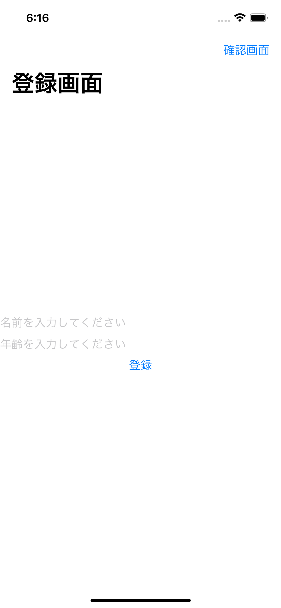

links
アプリ概要
今回はアプリからデータを保存するためにFirestoreを使用したいと思い、導入のほうほうについて学びました。
以下がアプリの起動直後の画面となります。

この画面では入力欄に名前、年齢を入力し登録ボタンを押下すると、入力されたデータが連携している
Firestoreに保存する処理を行ってくれます。
また、登録されているデータを確認するためには、右上の確認画面ボタンを押下することで、確認画面に遷移し確認することができます。